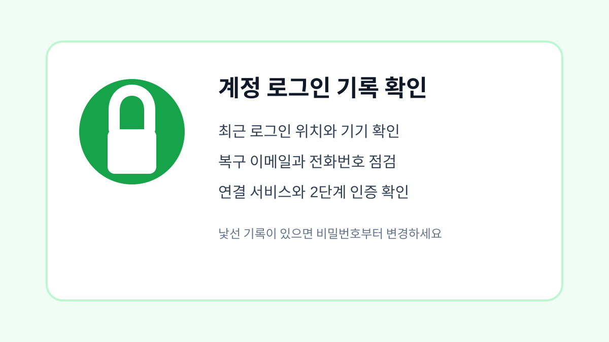

네이버 계정 로그인 기록 확인하고 보안 설정하는 방법
네이버 계정의 로그인 기록, 등록 기기, 비밀번호, 2단계 인증을 확인해 계정을 안전하게 관리하는 방법입니다.

네이버 계정은 메일, 카페, 쇼핑, 예약, 간편 로그인까지 여러 서비스와 연결됩니다. 그래서 이상한 로그인 흔적을 빨리 발견하는 것이 중요합니다. 평소에는 문제가 없어 보이더라도 비밀번호가 오래되었거나 사용하지 않는 기기가 남아 있다면 계정이 더 쉽게 위험해질 수 있습니다.
로그인 기록에서 낯선 접속 확인하기
먼저 네이버 계정 보안 설정에서 최근 로그인 기록을 확인합니다. 지역, 시간, 기기 이름이 평소와 다르게 보이면 비밀번호 변경과 모든 기기 로그아웃을 우선 진행하는 것이 좋습니다. 여행이나 VPN 사용처럼 본인이 만든 기록인지도 함께 생각해보면 불필요한 걱정을 줄일 수 있습니다.
등록된 기기와 연결 서비스를 정리하기
오래전에 사용하던 휴대폰, PC방 컴퓨터, 가족 기기에 로그인 상태가 남아 있을 수 있습니다. 사용하지 않는 기기는 로그아웃하고, 네이버 아이디로 로그인한 외부 서비스도 주기적으로 정리합니다. 특히 더 이상 쓰지 않는 쇼핑몰이나 이벤트 사이트가 연결되어 있다면 끊어두는 편이 안전합니다.
공식 보안 안내 확인하기
계정 보안 설정은 서비스 정책이 바뀔 수 있으므로 공식 안내를 함께 확인하는 것이 좋습니다. 네이버 고객센터의 보안 설정 안내는 네이버 고객센터에서 확인할 수 있습니다. 검색 결과나 문자 링크보다 직접 주소를 입력하거나 앱 안의 고객센터 메뉴로 들어가는 방식이 안전합니다.
| 점검 항목 | 확인 이유 | 권장 조치 |
|---|---|---|
| 로그인 기록 | 낯선 접속 확인 | 이상 시 비밀번호 변경 |
| 등록 기기 | 오래된 로그인 제거 | 사용 안 하는 기기 로그아웃 |
| 2단계 인증 | 도용 방지 | 휴대폰 인증 설정 |
| 복구 정보 | 계정 복구 대비 | 전화번호와 이메일 최신화 |
계정과 개인정보를 지키는 최종 점검
- 최근 로그인 기록에서 낯선 지역과 시간 확인하기
- 사용하지 않는 기기 로그아웃하기
- 외부 연결 서비스 정리하기
- 비밀번호를 다른 사이트와 다르게 설정하기
- 2단계 인증과 복구 정보를 최신 상태로 유지하기
보안 점검은 문제가 생긴 뒤보다 평소에 해두는 편이 훨씬 편합니다. 한 달에 한 번 로그인 기록을 확인하고, 휴대폰을 바꾼 뒤에는 반드시 이전 기기 로그인 상태를 정리해두세요.
네이버 계정 보안을 점검해야 하는 상황
중고 기기에서 로그인했거나 해외 로그인 알림을 본 적이 있다면 네이버 보안 설정을 확인해야 합니다. 로그인 기록, 등록된 기기, 2단계 인증, 복구 연락처를 함께 보면 단순 비밀번호 변경보다 안전합니다.
네이버 계정 관리에서 놓치기 쉬운 실수
비밀번호만 바꾸고 자동 로그인된 기기를 그대로 두면 이전 기기에서 접근이 이어질 수 있습니다. 사용하지 않는 기기와 외부 앱 연결을 정리하고 복구 이메일이 본인 것인지 확인하는 것이 좋습니다.
네이버 계정 보안 관련 설정을 먼저 확인해야 하는 이유
네이버 계정은 메일, 쇼핑, 페이, 블로그처럼 연결 범위가 넓어 로그인 기록 확인이 중요합니다. 낯선 지역, 사용하지 않는 브라우저, 오래된 기기가 보이면 단순 기록으로 넘기지 말고 전체 로그아웃과 비밀번호 변경을 함께 진행하세요.
네이버 계정 보안에서 자주 생기는 실수
복구 이메일과 휴대전화 번호가 예전 정보라면 보안 알림을 받아도 대응이 늦어질 수 있습니다. 로그인 차단이나 2단계 인증을 켜기 전에 복구 수단이 지금 사용하는 정보인지 먼저 확인하는 것이 좋습니다.
네이버 계정 보안 점검 후 다시 볼 부분
외부 서비스 연결도 놓치기 쉽습니다. 오래전에 연결한 앱이나 사이트가 남아 있으면 계정 정보 접근 범위가 예상보다 넓을 수 있습니다. 사용하지 않는 연결은 정리하고, 중요한 변경 후에는 메일로 보안 알림이 오는지도 확인하세요.